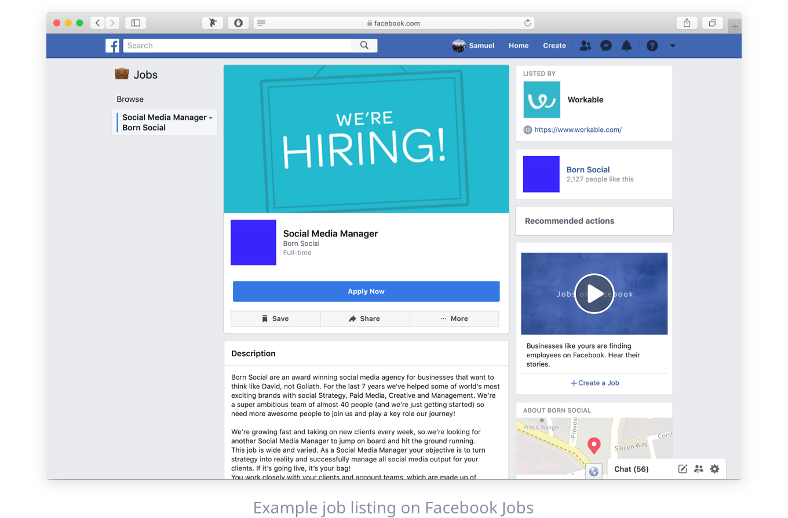
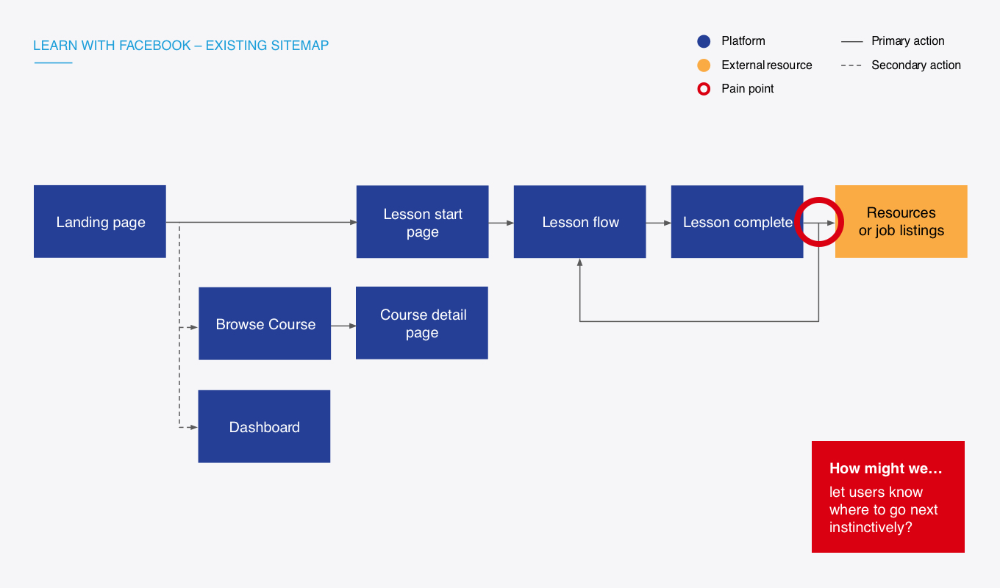
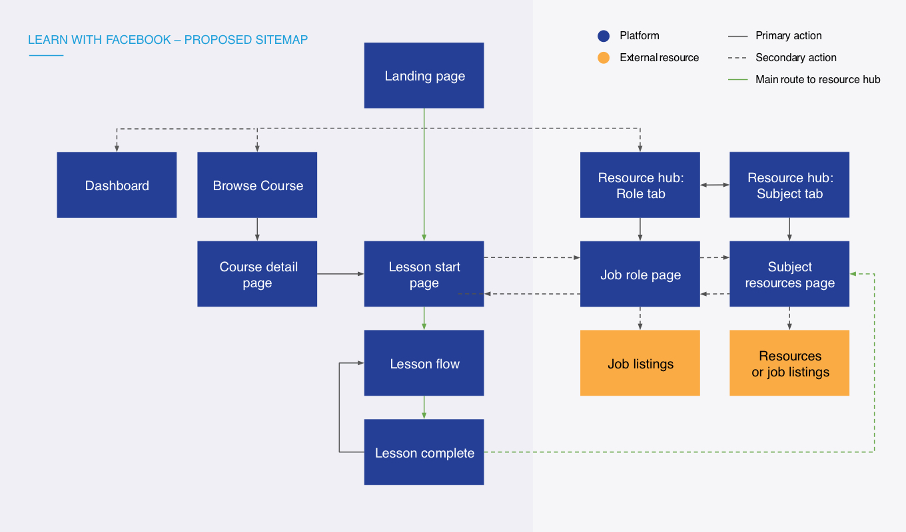
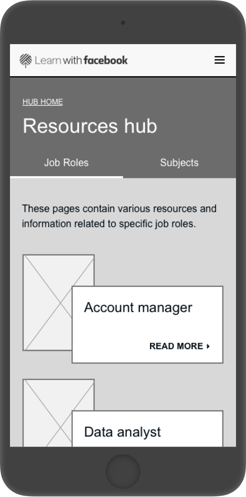
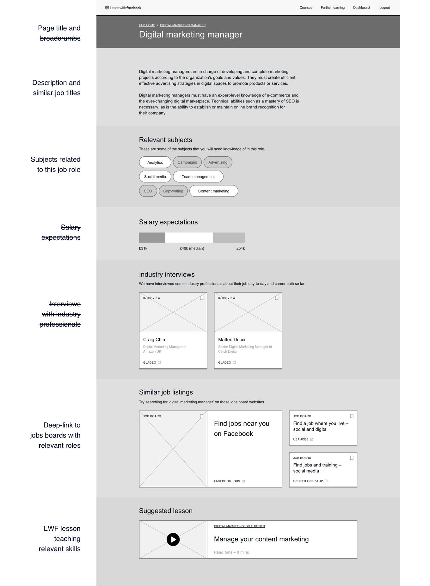
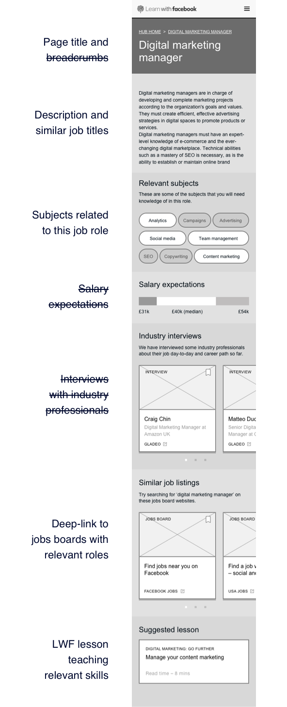
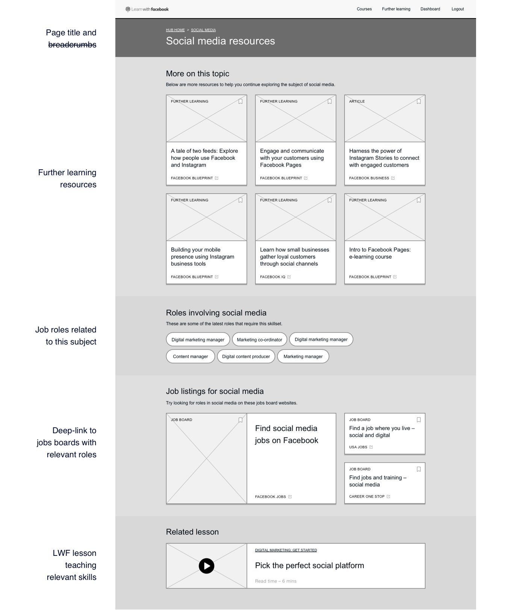
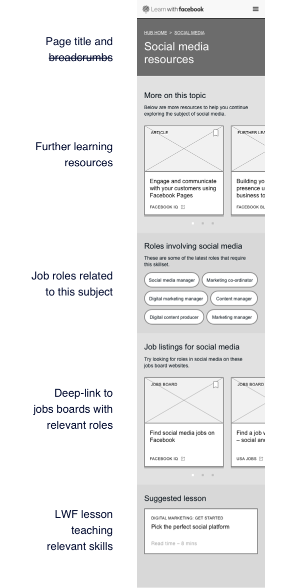
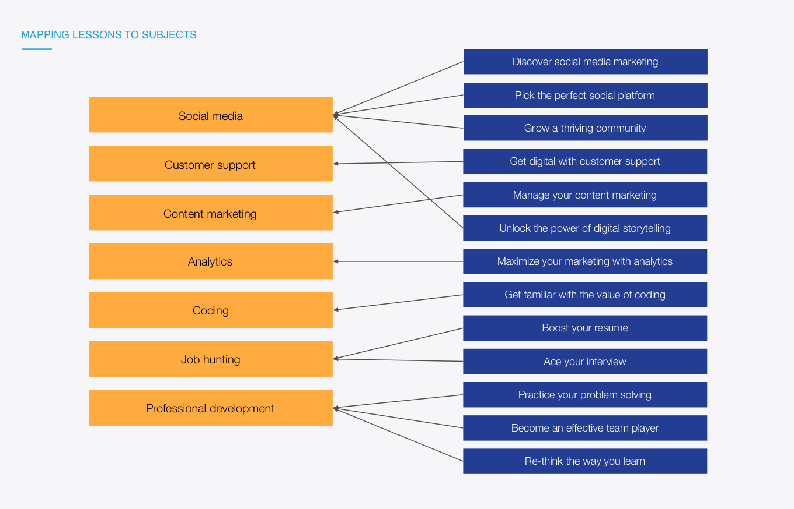
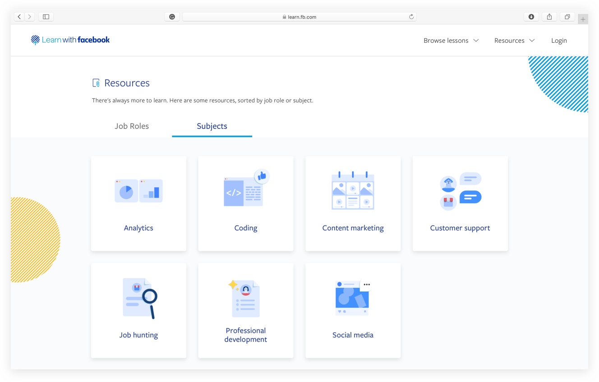

Learn with Facebook (LWF) is a learning platform built by Rehab to teach people about the world of digital marketing and how to pivot their career into the digital sector.
A year after its release, Facebook wanted to explore how the job feature on facebook.com could be integrated into the Learn with Facebook. Rehab contracted me to define the user experience for this integration.
The first piece of work was to identify who was using the platform and how we could help them get a job. A prior sprint on the project had defined three mindsets for the users on the platform.
Starters – People with no real job experience e.g. students or school leavers.
Developers – Currently employed, wanting to develop new skillsets.
Re-builders – Returning to work and want a new career e.g. older parents.
Rather than just displaying the job listings out of context, I wanted to zoom out and look at how we could help our users throughout their job hunting journey. After interviewing several final year university students and reviewing the previous user research, these areas where we could add value were identified:
The next step was to map out the existing state of the LWF product to identify where we could alter the product to answer these questions.
Prior testing had indicated that users were finding the lesson complete page confusing as both the next lesson CTA and further resources were fighting to be the primary onward route.
While it seemed obvious that users would want to get see job listings after completing the lessons, it was key that didn’t compound this issue and try to mitigate the problem.
As we needed a place to help people find careers and a new home for the further learning resources, I thought a resource hub would allow us to keep users in the lesson flow while creating a destination for jobs and resources.
The lessons on LWF teach either hard skills in digital marketing or soft skills around job-hunting. In response to this, the pages in the resource hub were split by job role (e.g. project manager) or subject area (e.g. coding or social media). The main inward route to the pages would be from the bottom of the lesson complete page.
The job role pages were designed to educate users about what the role would entail, link the user out to related subjects and show relevant job listings. Unfortunately, it turned out that the jobs API was private. Instead, we worked with the Facebook team to get URLs to pre-filtered job results pages so we could deep link users to relevant listings.
 To identify what job roles should be supported, I looked at search data for the job titles on the job product and crossed that with job skills being taught on the LWF curriculum. This resulted in 16 job titles, however, several titles referred to very similar jobs, such as digital marketing manager and digital marketing producer. We abstracted these similar titles down to eight key job roles.
The subjects pages were designed to provide further learning resources, link the user out to relevant job roles pages and show the variety of job listings in that subject area.
 The further reading resources had previously been mapped to lessons. Now that they were being organised by subject, they required remapping to make sure the users onward journey would still make sense.
To let users discover these page across the site we needed to update the global navigation and design a landing page for the resource hub.
As the first release would only have eight jobs roles and seven subject areas, I opted to use a tab switcher to allow the user to view either type on the landing page. To avoid solving a problem that might never occur, if the number of new resource pages led to navigation problems we would focus on that problem in a future sprint if necessary.
After the UX had been approved, the wireframes were handed over the Rehab’s visual designers before their developers recreated the final designs. I liaised with both teams to make sure the original intent wasn’t lost during the design and build phases.

You can see the live resource hub on Learn with Facebook.